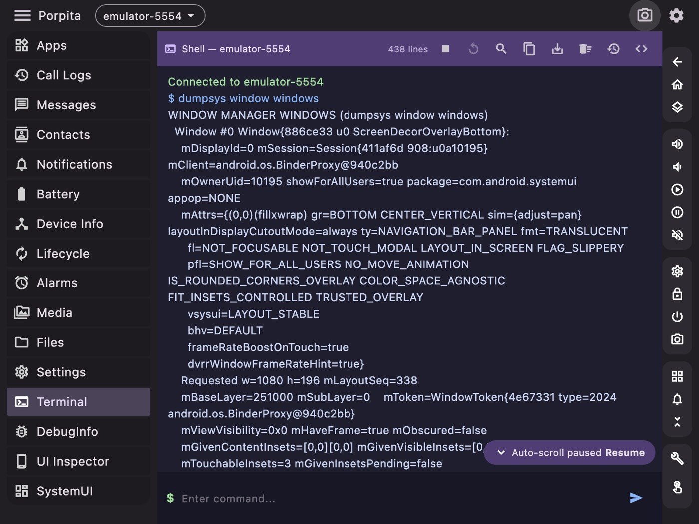
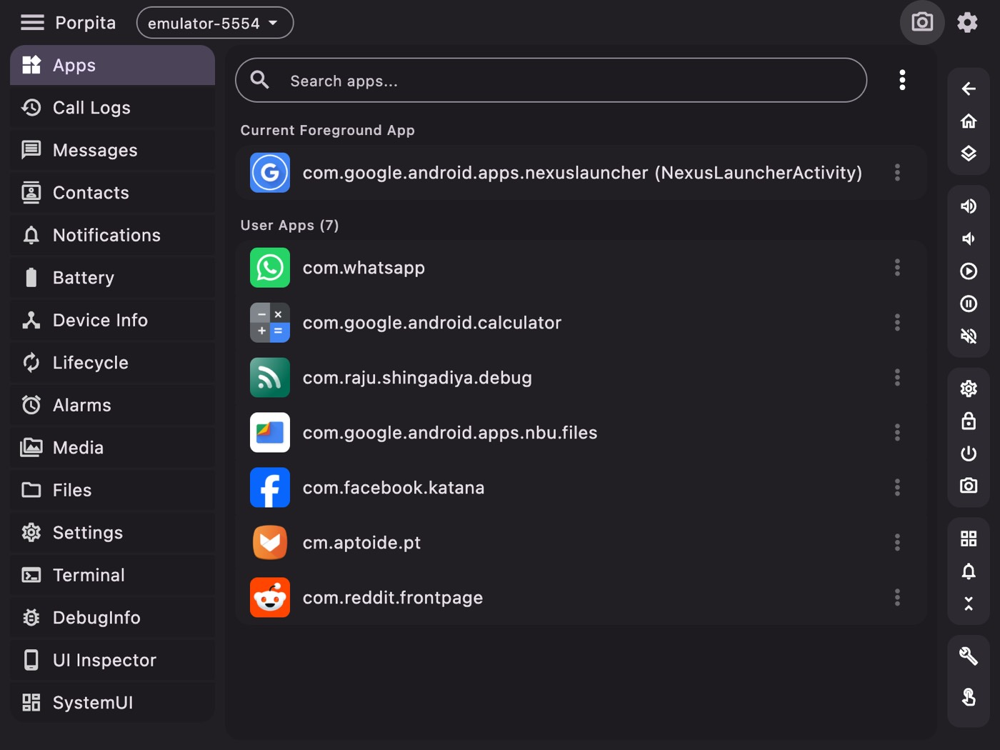
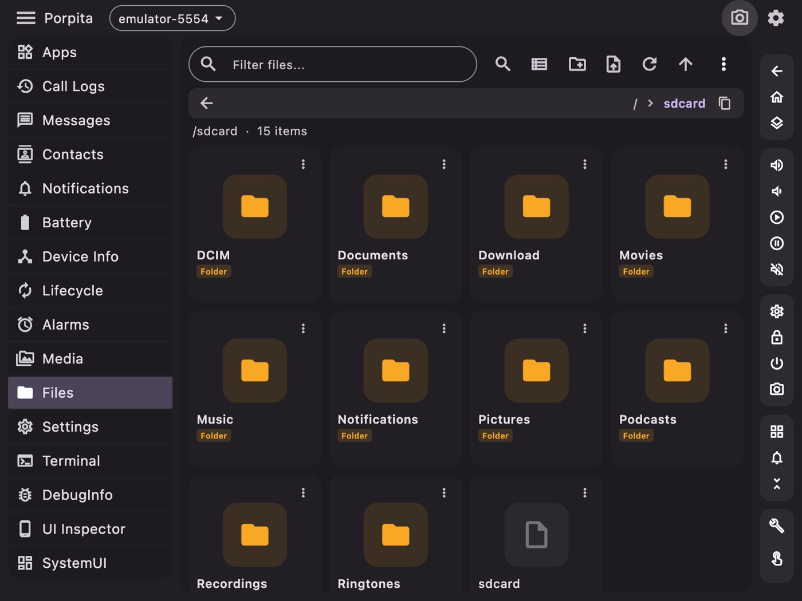
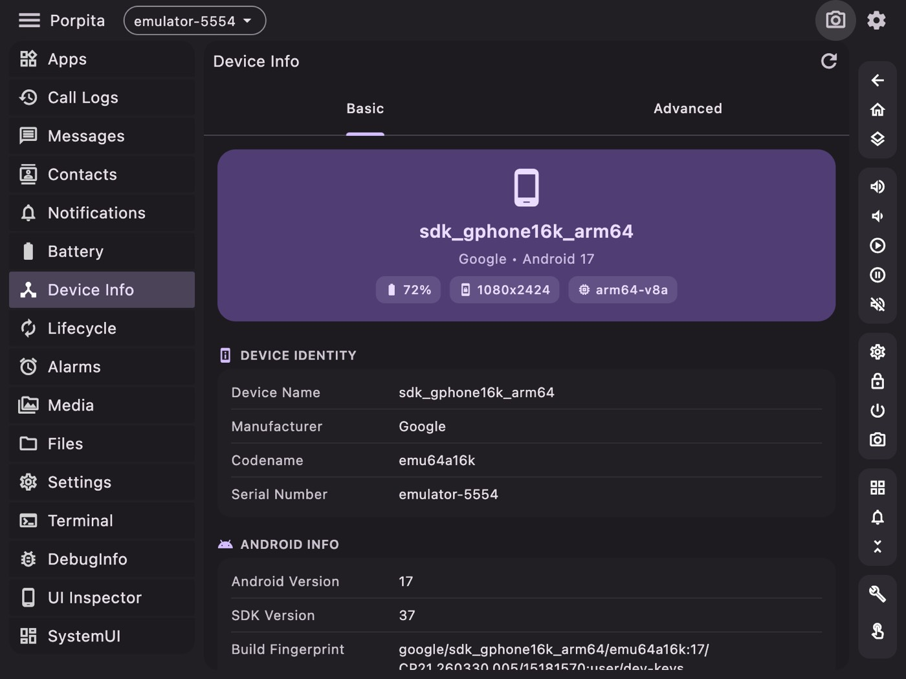
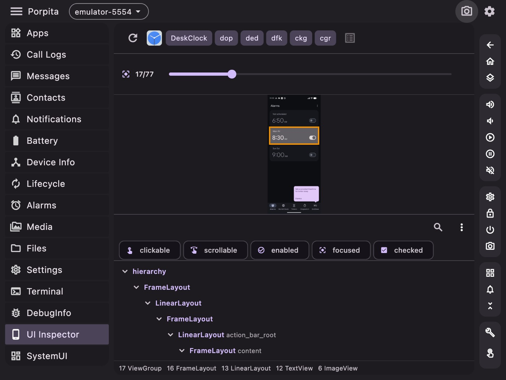

Porpita: I got tired of remembering adb commands
I have typed adb shell dumpsys window windows | grep mCurrentFocus more times than I would like to count. So I built the thing that types it for me.

ADB is a superb tool with a genuinely hostile interface. Everything you could want is in there somewhere — behind a subcommand you half-remember, piped into a grep you'll rewrite from scratch every time, producing output that scrolls past faster than you can read it.
After eight years of Android work I still keep a text file of ADB incantations. That's not expertise, that's a workaround. So Porpita is the GUI I wanted: a desktop app that wraps the commands I actually use into screens with buttons, and keeps a real terminal one click away for everything else.
It runs on macOS, Windows and Linux, built with Flutter.
What it does
Device management first — connect, disconnect, track several devices and emulators at once, switch between them from a dropdown that's always visible. Everything else in the app acts on whichever device is selected, which sounds obvious and is the single biggest quality-of-life win over the CLI, where the correct answer is remembering to type -s emulator-5554 on every command.



From there it grew into most of what I do day to day: a file browser with push and pull, app management, a logcat viewer, screen capture and recording, emulator management, a properties and settings editor, a UI inspector, and viewers for contacts, SMS and call logs on the connected device.
That last group is more useful than it sounds. Reading a device's SMS or call log through adb shell content query means constructing a URI query by hand and parsing the output. Porpita has a content_query_parser that turns it into a table you can read.

The part I'm actually proud of
Here's a problem that sounds trivial and isn't: showing app icons.
ADB has no command that hands you an installed app's icon. The icon is a drawable inside the APK, and resolving it correctly means going through Android's resource system — density buckets, adaptive icon layers, vector drawables, the lot. You could pull the whole APK and parse it on the desktop, but you'd be reimplementing a chunk of the Android framework, badly, for every app in the list.
So Porpita does something else. It ships a small Kotlin server compiled to a DEX file, pushes it to the device, and runs it with app_process — the same mechanism the Android runtime uses to start system processes. The result is a process running on the device, inside the Android framework, with access to the real PackageManager.
Porpita (Flutter, desktop)
│ push porpita.dex over ADB
│ start it via app_process
▼
porpita.dex (on device)
├── LocalServerSocket "porpita" ← JSON requests
├── PackageManager queries ← real framework APIs
├── Drawable → PNG conversion
└── HttpFileServer ← serves the PNGs backThe desktop app talks to it over a forwarded socket in JSON, asks for the icons it needs, and pulls the rendered PNGs over a small HTTP server. Icons get cached at /data/local/tmp/porpita/icons/ so the second launch is instant.
It's more machinery than a GUI has any right to need to draw a list. But it's the difference between correct icons for every app and a grid of grey placeholders, and getting it working was the most satisfying afternoon of the project.
Why Flutter
Because I wanted one codebase producing real desktop binaries for three platforms, and I did not want to write an Electron app that ships a browser to draw a table.
Flutter desktop has rough edges — the ecosystem is thinner than mobile, and some platform integrations need writing yourself — but for an app that is fundamentally "run subprocesses, parse their output, render it in panels", it's a good fit. Layout is fast, the widget set is complete, and Process.run is the same on all three platforms.
The dependency list stayed short: provider for state, shared_preferences, file_picker, xml for parsing UI dumps, network_info_plus for wireless ADB, qr_flutter for pairing codes.
How it's organised
Around 426 Dart files, which sounds like a lot until you see the shape of it. A services/ layer holds the logic that touches ADB — adb_manager, device_manager, emulator_manager, screen_capture_service, adb_content_service. Above that, one file per screen.
The bulk of the count is screens/commands/: a page per diagnostic command — dumpsys activity, dumpsys wifi, dumpsys sensor, dumpsys keystore, cat /proc/cpuinfo, df -h, bugreport and a long tail of others. Each is small: run this command, parse this output, show this table.
Adding a new one takes about fifteen minutes, which is why there are so many. Every time I found myself typing something into the terminal twice, it became a page.
Light and dark, and why that mattered
There's a full light and dark theme, and I mention it only because of what it revealed. Tools like this get used at two extremes: bright office, and 1am debugging session. Building both themes properly forced me to stop hardcoding colours in widgets, which in turn forced the design system to be real. The theme work made the app more consistent as a side effect.
The honest assessment
Porpita will not replace Android Studio, and it isn't trying to. Studio's profiler and debugger are in a different league.
What it replaces is the terminal tab where I keep a scratch file of commands. For inspecting a device, pushing a file, reading logs, checking a system property, grabbing a screenshot, or poking at an app's state, opening a window and clicking is simply faster than remembering syntax — and it doesn't require spinning up a full IDE for a thirty-second task.
MIT licensed. If it saves you one trip to a Stack Overflow answer about dumpsys flags, it's paid for itself.
← All posts